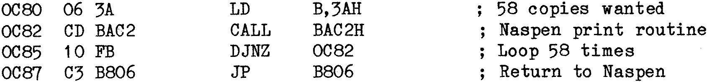
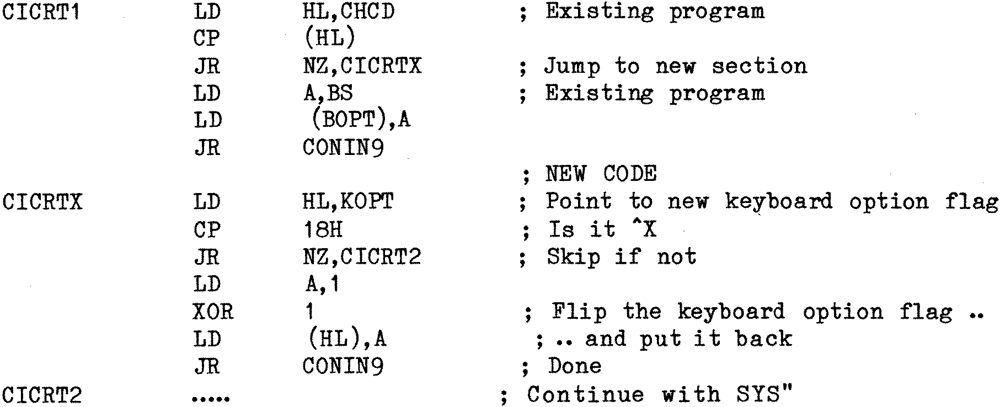

80-Bus News |
November–December 1983 · Volume 2 · Issue 6 |
| Page 12 of 67 |
|---|
piece of relocatable code which loads the B register with the number of copies to be printed, calls the Naspen print command, and loops until the B register is zero. The code can go anywhere except the Naspen workspace. I use 0C80H.

Load the text into Naspen and leave the cursor pointing at the first character to be printed. Exit from Naspen using the ‘N’ command. Enter the above code, setting the second byte for the number of copies required (in HEX) and execute at the address loaded. As Naspen prints each copy, the word ‘complete’ will be displayed on the screen, this is because this is in the Naspen print command.”
Lastly, from Mr Hill of Newhaven a little tweek to SYSN7, the last of the series of SYS for the Henelec/Gemini G805 disk sysetm. Mr. Hill uses the system under CP/M 1.4 with a Gemini GM812 video card:
“The modification allows me to use ^X to switch between the two keyboard options. Each successive use of ^X flips between the alternative options. The control can be used inside all the CP/M packages that I possess, although there may be some exceptions to this. The listing below shows my modification to the CP/M 1.4 version of SYS.

Looking at the code, something seems a little wrong, where does the contents of register A come from at CICRTX? I’ve just rechecked what I have typed in and that’s correct, but as I don’t have a copy of SYSN7 to hand I hope the code works.
Here endeth the letters and, lastly, on to a mini review of the Nascom NASPAS sent in some time ago by Mr. Pennell who doesn’t live a million miles away from me, in Pinner Middlesex, although we’ve never met except perhaps unknowingly over a pile of bean cans in the local Safeways.
“I first purchased the tape version of NASPAS, but later exchanged it for the EPROM version as my Nascom 1 has acres of EPROM space being fitted with two EPROM cards. My Nascom is also fitted with 64K of RAM, an I/O board and an external CUTS tape interface.
| Page 12 of 67 |
|---|